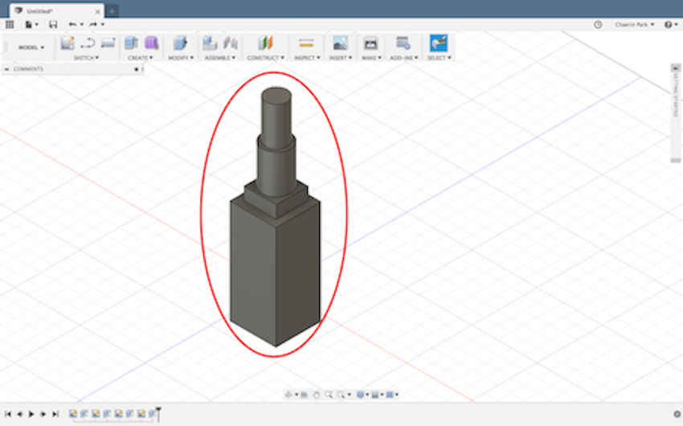

🌟ᴀᴜᴛᴏᴅᴇsᴋ ғᴜsɪᴏɴ 360🌟
<過程>
🔆SKETCHをクリックして,立てたい位置をクリックする。
🔆正方形柱を作成するには、CREATEをクリックします。
🔆クリックした後青い矢印が出てきたら、それを引き出している。このようになる。
🔆円柱を立てるのに、正方形柱の真上に立てるだろう。SKETCHのCIRCLEに入っクリックをした後、正方形一番上面にぴったり付くように円形を描く。

🔆積みたいように、上記の方法で積めばされる。その後、このような形になる。
<ᴍᴏᴅᴇʟ,ʀᴇɴᴅᴇʀ>
<本物と比較>
<反省点・改善点・分かったこと>
本物のように作ることができる。360度回転させて詳細に一つ一つすべての部分を作ることができる。 まだ技術が不足して口紅やティントの内側の構造まで作らなかった。 色を入れる方法を知っていたが、部分部分に色を入れる方法を知らなくて、色を入れていないまま終わった。 もう少し理解して、より詳細で素晴らしいことを3Dで作ってみたい。
<ʏᴏᴜᴛᴜʙᴇ>